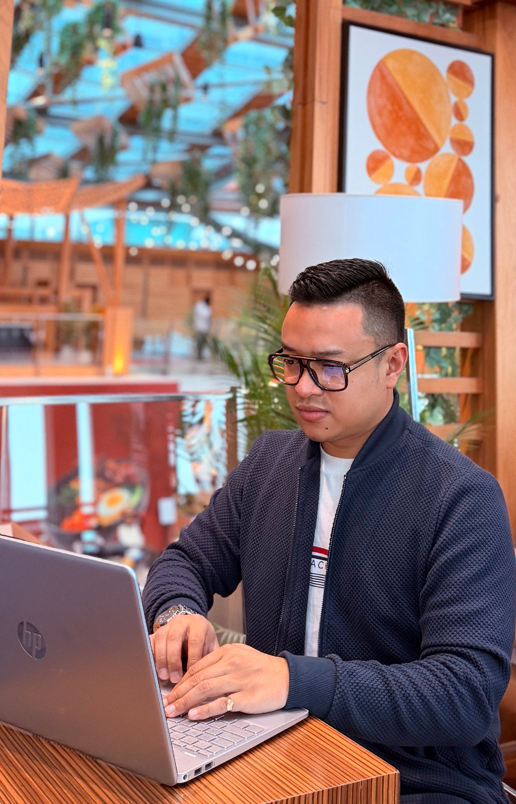

A senior digital product designer with 8+ years across fintech, e-commerce, print, and international brand sponsorship — and, before all of that, a computer science degree that still shows up in how I work.

I currently lead product & brand design at a multinational fintech group in Dubai, where I own end-to-end creative direction across digital and physical channels — from trading platform UX to brand assets carried on a MotoGP race motorcycle and a professional football jersey.
Before Dubai, I founded two creative businesses in Madagascar — an e-commerce brand and a print design studio — which is where I picked up the execution discipline that still shapes how I approach digital design. I studied Computer Science with a Web Design specialisation, which is probably why I still enjoy touching front-end code alongside design files.